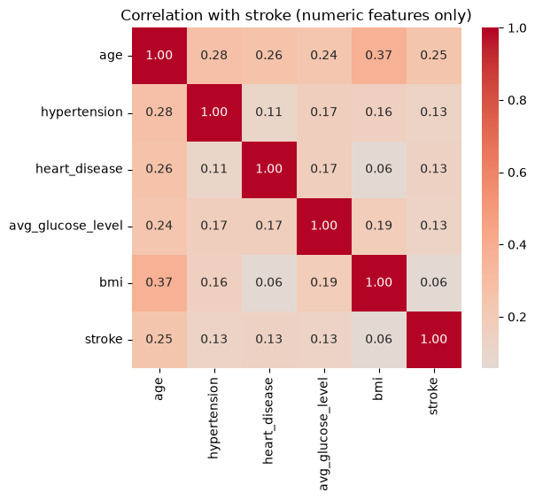
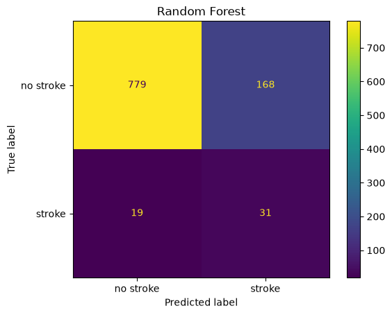
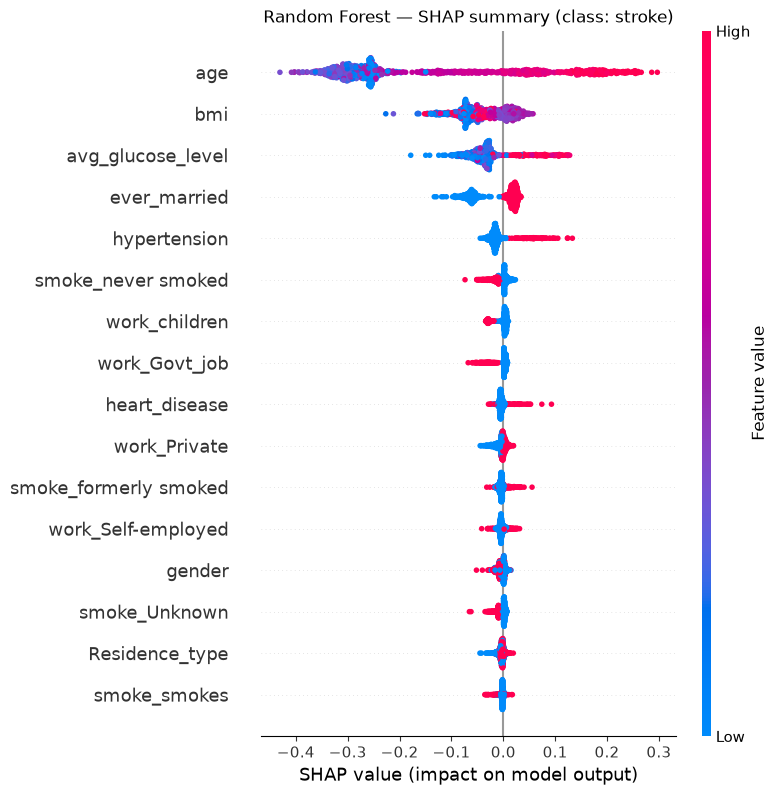
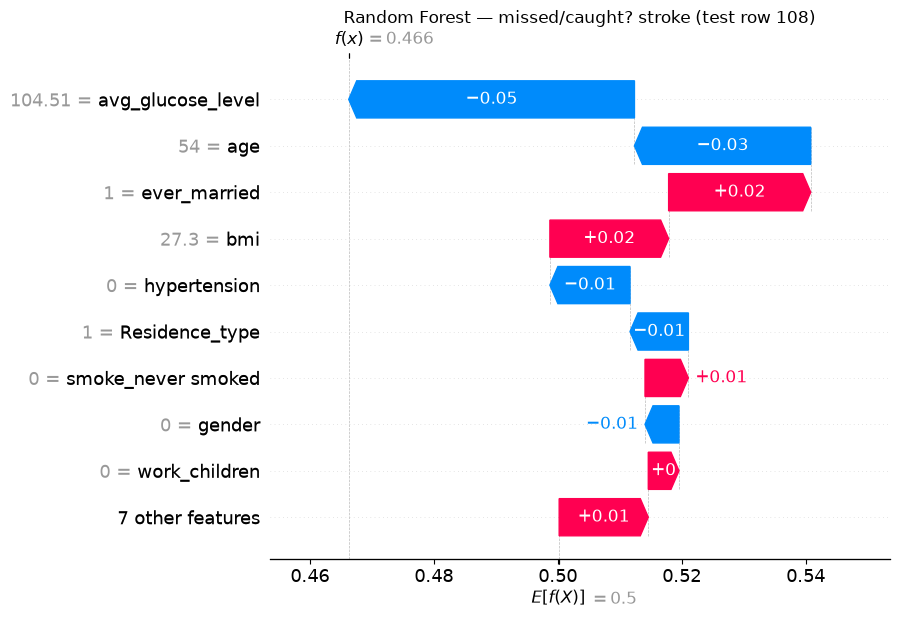
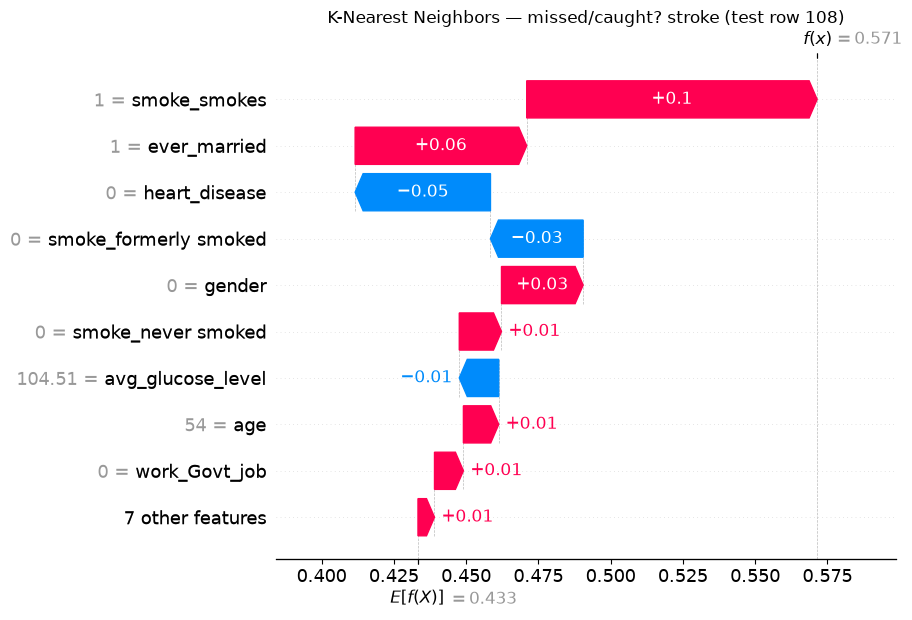
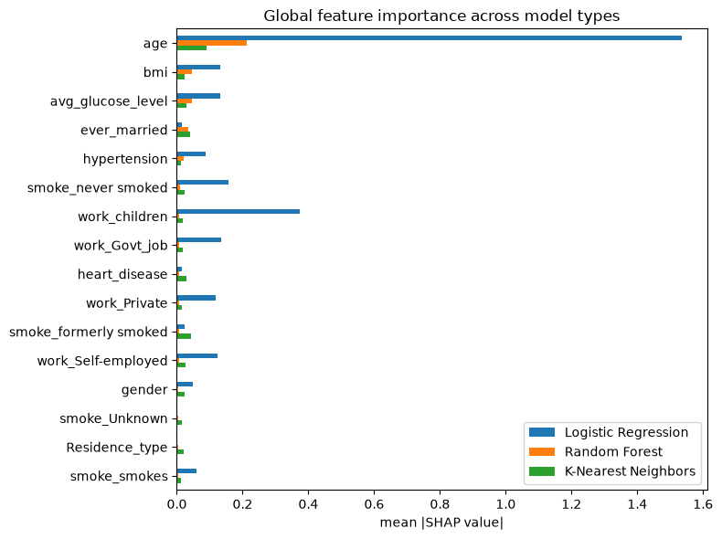
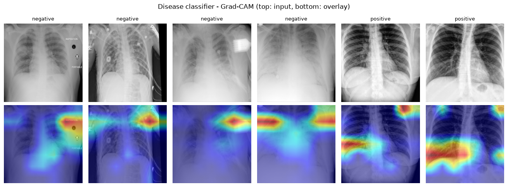
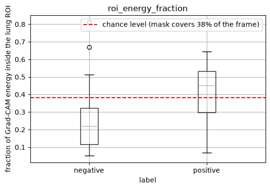

Explainable AI for Life Science¶
In this workshop, we will give an introduction to explainable AI (xAI) and its role in the life sciences. Through interactive lectures and hands-on notebooks, participants will apply explanation methods such as SHAP, feature importance, saliency maps, and GradCAM to real medical datasets – including brain stroke prediction from tabular data and classification of chest X-ray images. By the end of the workshop, you will have hands-on experience in generating, interpreting, and critically validating AI explanations on real-life science problems
Prerequisites
Basic familiarity with Python is expected.
Experience with machine learning is preferable, but no prior experience with explainable AI is required.
Setup¶
Python is a popular language for scientific computing, and a frequent choice for machine learning as well.
This workshop will use a Python environment containing JupyterLab and the necessary dependencies as the primary interface for all practical sessions. You are encouraged to follow the local installation option.
Please set up your Python environment at least a day in advance of the workshop. If you encounter problems with the installation procedure, attend the pre-workshop setup session for assistance, so that you are ready to go as soon as the workshop begins.
Local installation¶
Important
You have different options:
Use pip and virtual environments: If you have
gitin your terminal and are comfortable using virtual environments and have a working Python interpreter (at least version 3.10 or above), orUse Miniforge / pixi and conda environments: Recommended for Windows users, and users who don’t have tools like a Python interpreter,
gitin their devices.
Once you have done either, proceed to getting the notebooks. Finally download the datasets
Using pip¶
Open a terminal (Mac/Linux) or Command Prompt (Windows) and run the following commands.
Create a virtual environment called
venv-xai-for-ls:
python3 -m venv venv-xai-for-ls
Activate the newly created virtual environment:
source venv-xai-for-ls/bin/activate
venv-xai-for-ls\Scripts\activate
Remember that you need to activate your environment every time you restart your terminal!
Install the required packages:
Once you have activated your environment, you can install all the required packages for this workshop using the following command:
pip install -r https://raw.githubusercontent.com/sweden-ai-factory/xai-for-life-science/refs/heads/main/requirements.txt
Using Miniforge¶
In this page, we give indications about how to install Miniforge and use conda/mamba.
The first step is to install Miniforge, which is a modified version of Miniconda using by default the community driven conda-forge channel.
Download the installer using curl or wget or your favorite program. For eg:
wget "https://github.com/conda-forge/miniforge/releases/latest/download/Miniforge3-$(uname)-$(uname -m).sh"
or
curl -L -O "https://github.com/conda-forge/miniforge/releases/latest/download/Miniforge3-$(uname)-$(uname -m).sh"
Execute the installer and initialize conda:
bash Miniforge3-$(uname)-$(uname -m).sh -b
$HOME/miniforge3/bin/conda init --all
On Windows, download the Windows installer and follow the instructions given in https://github.com/conda-forge/miniforge.
Open an Anaconda Prompt and run conda init --all.
When it’s done, open a new terminal (click on ctrl-alt-t) and check that the
line in the new terminal starts with (base). The indication (base) means
that you use the base “environment”.
However, working in the base environment is not a good practice and it is
better to disable the auto activation with:
conda config --set auto_activate_base false
Tip
If you have a GPU, you might want to comment pytorch and uncomment pytorch-gpu in the
environment.yaml file.
Create an environment called
xai-for-ls:
conda env create --yes -f environment.yaml
Activate the environment:
conda activate xai-for-ls
Using pixi¶
Install Pixi by following the installation instructions.
Download https://raw.githubusercontent.com/sweden-ai-factory/xai-for-life-science/refs/heads/main/pixi.toml, and use one the below commands
pixi shell # If you don't have a GPU
pixi shell -e gpu # If you have a GPU
Use either pixi shell to enter the environment,
or prefix commands with pixi run.
Getting the Notebooks¶
Once you have git installed, enter the following command into your terminal:
git clone https://github.com/sweden-ai-factory/xai-for-life-science
The repository will be cloned to a directory named xai-for-life-science
which will also contain the notebooks. If you want to get the latest copy,
you update this repository by using
cd xai-for-life-science
git pull
Launch JupyterLab¶
From within your virtual environment (using activate script) or conda
environment (using conda activate xai-for-ls / pixi shell) navigate to the
notebooks directory and launch JupyterLab
cd xai-for-life-science/notebooks
jupyter-lab
which should also open JupyterLab.
Checking Your Environment¶
Once in, you can verify your setup by running:
from importlib.metadata import version
import torch
print("Accelerator available:", torch.accelerator.is_available())
print("GPU device:", torch.accelerator.current_accelerator() if torch.accelerator.is_available() else None)
print("PyTorch version:", torch.__version__)
import pytorch_grad_cam
print("PyTorch Grad-CAM version:", version("grad-cam"))
import shap
print("SHAP version:", shap.__version__)
import captum
print("Captum version:", captum.__version__)
You should get something similar as follows
Output
Accelerator available: True
GPU device: cuda
PyTorch version: 2.13.0
PyTorch Grad-CAM version: 1.5.7
SHAP version: 0.52.0
Captum version: 0.9.0
Talks¶
Slides from talks and presentations related to this lesson.
Introduction to the AI factory and AI for Life Science¶
Explainable AI for Life Science¶
Explainable AI¶
Explainable AI for Stroke Risk Prediction¶
From Simple Models to Post-hoc SHAP Explanations¶
Background¶
This exercise is based on:
Melnykova, N., Patereha, Y., Skopivskyi, S., Farion, M., Fedushko, S. & Drohomyretska, K. (2025). Machine learning for stroke prediction using imbalanced data. Scientific Reports, 15, 33773. https://doi.org/10.1038/s41598-025-01855-w
The paper (paper.pdf in this folder) builds several classifiers: Decision Tree, Random Forest, K-Nearest Neighbors, AdaBoost and Stacking, on a highly imbalanced stroke dataset (4981 patients, ~9:1 no-stroke:stroke ratio) and shows that a SMOTE-balanced Random Forest with tuned hyperparameters gets the best precision/recall/F1 (all ≈ 0.90). It also makes an important methodological point: accuracy is a misleading metric here - a model trained on the raw imbalanced data reaches 96% accuracy while catching zero stroke cases.
What the paper does not do is explain why its models make the predictions they do. That is the gap this exercise fills. Mirroring the paper’s own model line-up, we will train three simple classifiers — Logistic Regression, Random Forest, and K-Nearest Neighbors — instead of its tuned/stacked ensembles. For each one, we immediately follow training with post-hoc SHAP (SHapley Additive exPlanations):
Model 1 - Logistic Regression, then SHAP for Logistic Regression.
Model 2 - Random Forest, then Random Forest’s own built-in explanation, then SHAP for Random Forest.
Model 3 - K-Nearest Neighbors, then SHAP for K-Nearest Neighbors.
Throughout, you’ll find 🤔 Question call-outs. Pause and think about (or discuss with a neighbour) the answer before moving on — there’s no code to fill in, but the exercise is meant to be worked through actively, not just executed top to bottom.
1. Setup¶
import numpy as np
import pandas as pd
import matplotlib.pyplot as plt
import seaborn as sns
from sklearn.model_selection import train_test_split
from sklearn.linear_model import LogisticRegression
from sklearn.ensemble import RandomForestClassifier
from sklearn.neighbors import KNeighborsClassifier
from sklearn.pipeline import make_pipeline
from sklearn.preprocessing import StandardScaler
from sklearn.utils import resample
from sklearn.metrics import (
classification_report,
ConfusionMatrixDisplay,
roc_auc_score,
)
import shap
RANDOM_STATE = 42
2. Load and explore the data¶
df = pd.read_csv("data/data_stroke.csv")
df.shape
(4981, 11)
df.head()
| gender | age | hypertension | heart_disease | ever_married | work_type | Residence_type | avg_glucose_level | bmi | smoking_status | stroke | |
|---|---|---|---|---|---|---|---|---|---|---|---|
| 0 | Male | 67.0 | 0 | 1 | Yes | Private | Urban | 228.69 | 36.6 | formerly smoked | 1 |
| 1 | Male | 80.0 | 0 | 1 | Yes | Private | Rural | 105.92 | 32.5 | never smoked | 1 |
| 2 | Female | 49.0 | 0 | 0 | Yes | Private | Urban | 171.23 | 34.4 | smokes | 1 |
| 3 | Female | 79.0 | 1 | 0 | Yes | Self-employed | Rural | 174.12 | 24.0 | never smoked | 1 |
| 4 | Male | 81.0 | 0 | 0 | Yes | Private | Urban | 186.21 | 29.0 | formerly smoked | 1 |
df.dtypes
gender str
age float64
hypertension int64
heart_disease int64
ever_married str
work_type str
Residence_type str
avg_glucose_level float64
bmi float64
smoking_status str
stroke int64
dtype: object
df.isna().sum()
gender 0
age 0
hypertension 0
heart_disease 0
ever_married 0
work_type 0
Residence_type 0
avg_glucose_level 0
bmi 0
smoking_status 0
stroke 0
dtype: int64
df["stroke"].value_counts(normalize=True).rename("share")
stroke
0 0.950211
1 0.049789
Name: share, dtype: float64
Question 1 — What do you notice about the class balance above? Why can’t we just report “accuracy” for this problem and call it a day? (Think about what accuracy a model would get if it just predicted “no stroke” for every single patient.)
fig, axes = plt.subplots(1, 3, figsize=(14, 4))
sns.histplot(df["age"], ax=axes[0], bins=30)
axes[0].set_title("Age")
sns.histplot(df["avg_glucose_level"], ax=axes[1], bins=30)
axes[1].set_title("Average glucose level")
sns.histplot(df["bmi"], ax=axes[2], bins=30)
axes[2].set_title("BMI")
plt.tight_layout()
plt.show()

numeric_cols = ["age", "hypertension", "heart_disease", "avg_glucose_level", "bmi", "stroke"]
corr = df[numeric_cols].corr(numeric_only=True)
plt.figure(figsize=(6, 5))
sns.heatmap(corr, annot=True, fmt=".2f", cmap="coolwarm", center=0)
plt.title("Correlation with stroke (numeric features only)")
plt.show()

Question 2 - Which features look most correlated with
strokehere? Keep this ranking in mind — we’ll check later whether each model’s SHAP importance (computed from a trained model, not raw correlations) agrees with it.
3. Preprocessing¶
We encode the categorical variables before modeling: a binary 0/1 mapping for two-level features, and one-hot encoding for the multi-level ones (work_type, smoking_status), so all three model types can consume them directly.
data = df.copy()
# Binary categorical -> {0, 1}
data["gender"] = (data["gender"] == "Male").astype(int)
data["ever_married"] = (data["ever_married"] == "Yes").astype(int)
data["Residence_type"] = (data["Residence_type"] == "Urban").astype(int)
# Multi-level categorical -> one-hot
data = pd.get_dummies(data, columns=["work_type", "smoking_status"], prefix=["work", "smoke"])
bool_cols = data.select_dtypes(include="bool").columns
data[bool_cols] = data[bool_cols].astype(int)
data.head()
| gender | age | hypertension | heart_disease | ever_married | Residence_type | avg_glucose_level | bmi | stroke | work_Govt_job | work_Private | work_Self-employed | work_children | smoke_Unknown | smoke_formerly smoked | smoke_never smoked | smoke_smokes | |
|---|---|---|---|---|---|---|---|---|---|---|---|---|---|---|---|---|---|
| 0 | 1 | 67.0 | 0 | 1 | 1 | 1 | 228.69 | 36.6 | 1 | 0 | 1 | 0 | 0 | 0 | 1 | 0 | 0 |
| 1 | 1 | 80.0 | 0 | 1 | 1 | 0 | 105.92 | 32.5 | 1 | 0 | 1 | 0 | 0 | 0 | 0 | 1 | 0 |
| 2 | 0 | 49.0 | 0 | 0 | 1 | 1 | 171.23 | 34.4 | 1 | 0 | 1 | 0 | 0 | 0 | 0 | 0 | 1 |
| 3 | 0 | 79.0 | 1 | 0 | 1 | 0 | 174.12 | 24.0 | 1 | 0 | 0 | 1 | 0 | 0 | 0 | 1 | 0 |
| 4 | 1 | 81.0 | 0 | 0 | 1 | 1 | 186.21 | 29.0 | 1 | 0 | 1 | 0 | 0 | 0 | 1 | 0 | 0 |
X = data.drop(columns=["stroke"])
y = data["stroke"]
X.columns.tolist()
['gender',
'age',
'hypertension',
'heart_disease',
'ever_married',
'Residence_type',
'avg_glucose_level',
'bmi',
'work_Govt_job',
'work_Private',
'work_Self-employed',
'work_children',
'smoke_Unknown',
'smoke_formerly smoked',
'smoke_never smoked',
'smoke_smokes']
Question 3 — One-hot encoding turns
work_type(4 categories) andsmoking_status(4 categories) into 8 separate binary columns. What effect might that have on a feature importance ranking, compared to treatingwork_typeas a single feature? Keep this in mind for later.
X_train, X_test, y_train, y_test = train_test_split(
X, y, test_size=0.2, random_state=RANDOM_STATE, stratify=y
)
X_train.shape, X_test.shape
((3984, 16), (997, 16))
Real-world clinical datasets like this one are usually imbalanced, so each model below handles that imbalance differently — deliberately, since not every model family offers the same knobs.
4. Model 1 - Logistic Regression¶
A linear model is a sensible starting point: it’s fast, and its coefficients are already somewhat interpretable, which will make a good reference point once we bring in SHAP. class_weight="balanced" re-weights the loss so misclassifying the minority (stroke) class costs more.
logreg = LogisticRegression(max_iter=2000, class_weight="balanced", random_state=RANDOM_STATE)
logreg.fit(X_train, y_train)
y_pred_lr = logreg.predict(X_test)
print(classification_report(y_test, y_pred_lr, target_names=["no stroke", "stroke"]))
print("ROC AUC:", roc_auc_score(y_test, logreg.predict_proba(X_test)[:, 1]))
precision recall f1-score support
no stroke 0.99 0.75 0.85 947
stroke 0.15 0.84 0.25 50
accuracy 0.75 997
macro avg 0.57 0.79 0.55 997
weighted avg 0.95 0.75 0.82 997
ROC AUC: 0.841013727560718
ConfusionMatrixDisplay.from_predictions(y_test, y_pred_lr, display_labels=["no stroke", "stroke"])
plt.title("Logistic Regression")
plt.show()

Question 4 - Look at the precision and recall for the “stroke” class specifically.
class_weight="balanced"pushes the model toward one of those two at the expense of the other - which one, and why might a hospital care more about recall than precision for this particular class?
4.1 SHAP for Logistic Regression¶
Both models above and below are already trained before we explain them — post-hoc explainability means explaining decisions after the fact, using only the trained model and data, without changing how the model was built. SHAP (Lundberg & Lee, 2017) assigns every feature, for every individual prediction, a contribution value based on Shapley values from cooperative game theory, such that the contributions sum exactly to (prediction − average prediction). It supports both:
Global explanations — average feature contributions across many patients (what matters overall?).
Local explanations — feature contributions for one specific patient (why this prediction?).
Linear models have an exact, closed-form SHAP algorithm (LinearExplainer) — no sampling or approximation needed.
explainer_lr = shap.LinearExplainer(logreg, X_train)
sv_lr = explainer_lr(X_test)
sv_lr.values.shape # (n_samples, n_features)
Background dataset has 3984 samples but max_samples=100. Subsampling to 100 samples for SHAP value computation. To use all samples, set max_samples=3984 when initializing the masker.
(997, 16)
shap.summary_plot(sv_lr, X_test, show=False)
plt.title("Logistic Regression — SHAP summary")
plt.show()

coefs = pd.Series(logreg.coef_[0], index=X.columns).sort_values(key=np.abs, ascending=False)
coefs
work_children 1.336453
work_Govt_job -0.651375
hypertension 0.631786
work_Self-employed -0.459726
smoke_never smoked -0.332875
work_Private -0.237470
smoke_smokes 0.231800
heart_disease 0.179370
gender -0.096085
smoke_formerly smoked 0.084973
age 0.078213
ever_married 0.032565
bmi 0.024008
Residence_type 0.004211
avg_glucose_level 0.004076
smoke_Unknown 0.003984
dtype: float64
Question 5 - Compare this coefficient ranking to the SHAP summary plot above.
logreg.coef_is a per-unit effect: a coefficient of ~1.35 on a 0/1 dummy and a coefficient of ~0.08 onage(which ranges 0–82) are not on a comparable scale. For a linear model, SHAP attribution is mathematicallycoefficient × (value − average value)— it rescales each coefficient by how much that feature actually varies in the data. Which feature does that push back to the top, and does it match Question 2’s correlation ranking better than the raw coefficients did?
We’ll want to look at the same two patients across every model in this notebook, so let’s fix them here: one stroke case Logistic Regression correctly flags, and one it misses.
y_test_arr = y_test.to_numpy()
true_positive_idx = np.where((y_pred_lr == 1) & (y_test_arr == 1))[0]
false_negative_idx = np.where((y_pred_lr == 0) & (y_test_arr == 1))[0]
tp_i = true_positive_idx[0]
fn_i = false_negative_idx[0]
print(f"{len(true_positive_idx)} correctly caught strokes, "
f"{len(false_negative_idx)} missed strokes in Logistic Regression's test predictions")
print("Chosen patients — tp_i:", tp_i, " fn_i:", fn_i)
X_test.iloc[[tp_i, fn_i]]
42 correctly caught strokes, 8 missed strokes in Logistic Regression's test predictions
Chosen patients — tp_i: 26 fn_i: 108
| gender | age | hypertension | heart_disease | ever_married | Residence_type | avg_glucose_level | bmi | work_Govt_job | work_Private | work_Self-employed | work_children | smoke_Unknown | smoke_formerly smoked | smoke_never smoked | smoke_smokes | |
|---|---|---|---|---|---|---|---|---|---|---|---|---|---|---|---|---|
| 11 | 0 | 79.0 | 0 | 1 | 1 | 1 | 214.09 | 28.2 | 0 | 1 | 0 | 0 | 0 | 0 | 1 | 0 |
| 10 | 0 | 54.0 | 0 | 0 | 1 | 1 | 104.51 | 27.3 | 0 | 1 | 0 | 0 | 0 | 0 | 0 | 1 |
shap.plots.waterfall(sv_lr[tp_i], show=False)
plt.title(f"Logistic Regression — correctly flagged stroke (test row {tp_i})")
plt.show()

shap.plots.waterfall(sv_lr[fn_i], show=False)
plt.title(f"Logistic Regression — missed stroke (test row {fn_i})")
plt.show()

Question 6 - For the patient Logistic Regression missed, which features pushed the prediction down toward “no stroke”? Does the raw patient data above suggest anything a clinician might have flagged that the model under-weighted?
5. Model 2 - Random Forest¶
rf = RandomForestClassifier(
n_estimators=300,
max_depth=8,
class_weight="balanced",
random_state=RANDOM_STATE,
n_jobs=-1,
)
rf.fit(X_train, y_train)
y_pred_rf = rf.predict(X_test)
print(classification_report(y_test, y_pred_rf, target_names=["no stroke", "stroke"]))
print("ROC AUC:", roc_auc_score(y_test, rf.predict_proba(X_test)[:, 1]))
precision recall f1-score support
no stroke 0.98 0.82 0.89 947
stroke 0.16 0.62 0.25 50
accuracy 0.81 997
macro avg 0.57 0.72 0.57 997
weighted avg 0.94 0.81 0.86 997
ROC AUC: 0.8336008447729673
ConfusionMatrixDisplay.from_predictions(y_test, y_pred_rf, display_labels=["no stroke", "stroke"])
plt.title("Random Forest")
plt.show()

Question 7 - This Random Forest is deliberately simple — a shallow, untuned forest with
class_weight="balanced"and no hyperparameter search. Its raw performance numbers aren’t going to win any awards. Does that make it useless for this exercise? What are we actually using it for here?
5.1 Random Forest’s own explanation¶
Unlike Logistic Regression, Random Forest ships a “free” explanation out of the box: feature_importances_, a global ranking based on how much each feature reduced impurity across all trees.
rf_builtin = pd.Series(rf.feature_importances_, index=X.columns).sort_values(ascending=False)
rf_builtin.plot.barh(figsize=(7, 6))
plt.gca().invert_yaxis()
plt.xlabel("Gini importance (feature_importances_)")
plt.title("Random Forest — built-in feature importance")
plt.tight_layout()
plt.show()

This raises the question this exercise started from: if Random Forest already gives you this for free, why bother with SHAP at all?
5.2 SHAP for Random Forest¶
Tree ensembles also have an exact SHAP algorithm (TreeExplainer) - no sampling needed.
explainer_rf = shap.TreeExplainer(rf)
sv_rf = explainer_rf(X_test)
sv_rf.values.shape # (n_samples, n_features, n_classes)
(997, 16, 2)
sv_rf holds attributions for both classes. We only care about explaining the “stroke” class (index 1) — attributions for “no stroke” are just the negative of those.
sv_rf_stroke = sv_rf[:, :, 1]
shap.summary_plot(sv_rf_stroke, X_test, show=False)
plt.title("Random Forest — SHAP summary (class: stroke)")
plt.show()

rf_shap_importance = pd.Series(np.abs(sv_rf_stroke.values).mean(axis=0), index=X.columns)
comparison = pd.DataFrame({
"Built-in (feature_importances_)": rf_builtin,
"SHAP (mean |SHAP value|)": rf_shap_importance,
})
comparison = comparison.loc[rf_builtin.index] # keep built-in's own ranking as the ordering
fig, axes = plt.subplots(1, 2, figsize=(12, 6), sharey=True)
comparison["Built-in (feature_importances_)"].plot.barh(ax=axes[0])
axes[0].invert_yaxis()
axes[0].set_title("Built-in importance")
comparison["SHAP (mean |SHAP value|)"].plot.barh(ax=axes[1], color="darkorange")
axes[1].set_title("SHAP importance")
plt.tight_layout()
plt.show()

Question 8 - Compare the two rankings.
shap.plots.waterfall(sv_rf_stroke[tp_i], show=False)
plt.title(f"Random Forest — correctly flagged stroke (test row {tp_i})")
plt.show()

shap.plots.waterfall(sv_rf_stroke[fn_i], show=False)
plt.title(f"Random Forest — missed/caught? stroke (test row {fn_i})")
plt.show()

Question 9 -
feature_importances_cannot produce either of the two plots above - there is no version of “built-in importance” for a single patient. Checky_pred_rf[fn_i]below: did Random Forest also miss the patient Logistic Regression missed, or did it catch it? Do the two models agree on why this patient is high or low-risk, even where they disagree on the final call?
y_pred_lr[fn_i], y_pred_rf[fn_i], y_test_arr[fn_i]
(np.int64(0), np.int64(0), np.int64(1))
6. Model 3 - K-Nearest Neighbors¶
KNN needs different treatment from the other two models:
It has no
class_weightargument. Distance-based voting doesn’t have a natural “loss re-weighting” mechanism the way Logistic Regression or Random Forest do. Instead, we balance the training data itself using random under-sampling — dropping “no stroke” rows at random until the classes are equal. It’s the crudest possible balancing method — we throw away most of the majority class — but it’s simple, needs no extra dependency, and keeps the training set small enough for the SHAP step below to run quickly.It’s sensitive to feature scale. Distance calculations are dominated by whichever features have the largest raw range (
age: 0–82) unless we standardize first, so we again use aPipelinewithStandardScaler.
train_balanced = X_train.copy()
train_balanced["stroke"] = y_train.values
majority = train_balanced[train_balanced["stroke"] == 0]
minority = train_balanced[train_balanced["stroke"] == 1]
majority_downsampled = resample(
majority, replace=False, n_samples=len(minority), random_state=RANDOM_STATE
)
train_balanced = pd.concat([majority_downsampled, minority]).sample(
frac=1, random_state=RANDOM_STATE
)
X_train_bal = train_balanced.drop(columns="stroke")
y_train_bal = train_balanced["stroke"]
y_train_bal.value_counts()
stroke
0 198
1 198
Name: count, dtype: int64
knn = make_pipeline(StandardScaler(), KNeighborsClassifier(n_neighbors=7))
knn.fit(X_train_bal, y_train_bal)
y_pred_knn = knn.predict(X_test)
print(classification_report(y_test, y_pred_knn, target_names=["no stroke", "stroke"]))
print("ROC AUC:", roc_auc_score(y_test, knn.predict_proba(X_test)[:, 1]))
precision recall f1-score support
no stroke 0.98 0.64 0.77 947
stroke 0.09 0.70 0.16 50
accuracy 0.64 997
macro avg 0.53 0.67 0.47 997
weighted avg 0.93 0.64 0.74 997
ROC AUC: 0.7402956705385427
ConfusionMatrixDisplay.from_predictions(y_test, y_pred_knn, display_labels=["no stroke", "stroke"])
plt.title("K-Nearest Neighbors")
plt.show()

Question 10 - Under-sampling threw away most of the majority-class training rows (check the shapes above). What’s the downside of that, independent of class balance - and does the KNN confusion matrix show any symptom of it, compared to Logistic Regression and Random Forest?
6.1 SHAP for K-Nearest Neighbors¶
KNN has no specialized SHAP algorithm — there’s no split structure (like a tree) or coefficient vector (like a linear model) to exploit, and unlike Random Forest, it has no built-in importance either. For a model like this, post-hoc SHAP isn’t a “nice to have” alongside a built-in method — it’s the only option. shap.Explainer falls back to a model-agnostic algorithm: it repeatedly permutes feature values against a small background sample and observes how the model’s output changes, then averages those changes into an estimate of the Shapley values. This works for literally any predict-like function, but it means many more model evaluations than TreeExplainer or LinearExplainer needed — and each KNN prediction itself requires a distance search, which is comparatively slow. To keep this runnable in a workshop session, we explain a random subsample of the test set for the global view, rather than all 997 rows.
background = shap.sample(X_train_bal, 30, random_state=RANDOM_STATE)
explainer_knn = shap.Explainer(knn.predict_proba, background, feature_names=X.columns.tolist())
print(type(explainer_knn)) # shap picked a Permutation explainer for us
X_explain = X_test.sample(200, random_state=RANDOM_STATE)
sv_knn = explainer_knn(X_explain)
sv_knn.values.shape # (n_samples, n_features, n_classes)
<class 'shap.explainers._permutation.PermutationExplainer'>
PermutationExplainer explainer: 201it [04:46, 1.46s/it]
(200, 16, 2)
sv_knn_stroke = sv_knn[:, :, 1]
shap.summary_plot(sv_knn_stroke, X_explain, show=False)
plt.title("K-Nearest Neighbors — SHAP summary (class: stroke, 200-row subsample)")
plt.show()
/tmp/ipykernel_60740/3933644982.py:3: FutureWarning: The NumPy global RNG was seeded by calling `np.random.seed`. In a future version this function will no longer use the global RNG. Pass `rng` explicitly to opt-in to the new behaviour and silence this warning.
shap.summary_plot(sv_knn_stroke, X_explain, show=False)

Question 11 -
ageis still a top feature, but the SHAP values for KNN look noisier and more spread out than they did for Random Forest or Logistic Regression. Given that KNN was trained on an under-sampled set of only a few hundred patients, and that a KNN decision boundary is entirely local (it only “looks at” the nearest training points to each query), does a noisier explanation surprise you? What would you expect to happen to this plot if we usedn_neighbors=50instead of7?
For the same two patients we can compute exact SHAP values directly, without needing the full subsample — a local explanation is cheap even when a large-scale global one isn’t.
sv_knn_local = explainer_knn(X_test.iloc[[tp_i, fn_i]])
sv_knn_local_stroke = sv_knn_local[:, :, 1]
shap.plots.waterfall(sv_knn_local_stroke[0], show=False)
plt.title(f"K-Nearest Neighbors — correctly flagged stroke (test row {tp_i})")
plt.show()

shap.plots.waterfall(sv_knn_local_stroke[1], show=False)
plt.title(f"K-Nearest Neighbors — missed/caught? stroke (test row {fn_i})")
plt.show()

Question 12 - Check the predictions of all three models on this patient below. Does it get flagged by any of them, all of them, or none? If the models disagree, what does that tell you about how confident you should be in any single model’s explanation for a borderline case?
y_pred_lr[fn_i], y_pred_rf[fn_i], y_pred_knn[fn_i], y_test_arr[fn_i]
(np.int64(0), np.int64(0), np.int64(1), np.int64(1))
7. Comparing global importance across all three models¶
importance_lr = pd.Series(np.abs(sv_lr.values).mean(axis=0), index=X.columns, name="Logistic Regression")
importance_rf = pd.Series(np.abs(sv_rf_stroke.values).mean(axis=0), index=X.columns, name="Random Forest")
importance_knn = pd.Series(np.abs(sv_knn_stroke.values).mean(axis=0), index=X.columns, name="K-Nearest Neighbors")
importance = pd.concat([importance_lr, importance_rf, importance_knn], axis=1)
importance = importance.sort_values("Random Forest", ascending=False)
importance.plot.barh(figsize=(8, 6))
plt.gca().invert_yaxis()
plt.xlabel("mean |SHAP value|")
plt.title("Global feature importance across model types")
plt.tight_layout()
plt.show()

Note: the KNN column was computed on a 200-row subsample (Section 6.1), while the other two used the full 997-row test set — expect it to be noisier, not just differently scaled.
Question 13 - Which features do all three models agree matter? Which ones does only one model pick up on?
7.1 Aggregating one-hot groups¶
Recall Question 3: work_type and smoking_status are each split across several one-hot columns, which can make each individual dummy look less important than the original categorical feature really is. One fix is to add their contributions back together per patient before averaging.
def group_name(col: str) -> str:
if col.startswith("work_"):
return "work_type"
if col.startswith("smoke_"):
return "smoking_status"
return col
def grouped_importance(sv_values, columns):
abs_shap = pd.DataFrame(np.abs(sv_values), columns=columns)
return abs_shap.T.groupby(group_name).sum().T.mean(axis=0)
grouped_importance(sv_rf_stroke.values, X.columns).sort_values(ascending=False)
age 0.211950
bmi 0.046216
avg_glucose_level 0.046018
ever_married 0.035588
work_type 0.025743
smoking_status 0.023257
hypertension 0.020677
heart_disease 0.005728
gender 0.005577
Residence_type 0.004575
dtype: float64
Question 14 - Does
work_typeorsmoking_statusmove up in the ranking once its one-hot columns are combined? How does this compare to the Random Forest ranking in Section 5.2?
7.2 Does the encoding itself change what SHAP finds important?¶
Summing the one-hot SHAP values after the fact only answers “how much does work_type matter in total, given how we happened to encode it.” It does not answer what Question 3 actually asked: what if we had encoded work_type as a single number to begin with, instead of one-hot? Let’s find out directly, by re-encoding work_type as one ordinal column (Private=0, Self-employed=1, Govt_job=2, children=3) and retraining all three models on that version of the data.
label_map = {"Private": 0, "Self-employed": 1, "Govt_job": 2, "children": 3}
data_ord = df.copy()
data_ord["gender"] = (data_ord["gender"] == "Male").astype(int)
data_ord["ever_married"] = (data_ord["ever_married"] == "Yes").astype(int)
data_ord["Residence_type"] = (data_ord["Residence_type"] == "Urban").astype(int)
data_ord["work_type_ordinal"] = data_ord["work_type"].map(label_map)
data_ord = data_ord.drop(columns=["work_type"])
data_ord = pd.get_dummies(data_ord, columns=["smoking_status"], prefix="smoke")
bool_cols = data_ord.select_dtypes(include="bool").columns
data_ord[bool_cols] = data_ord[bool_cols].astype(int)
X_ord = data_ord.drop(columns=["stroke"])
X_train_ord, X_test_ord, y_train_ord, y_test_ord = train_test_split(
X_ord, y, test_size=0.2, random_state=RANDOM_STATE, stratify=y
)
X_ord.columns.tolist()
['gender',
'age',
'hypertension',
'heart_disease',
'ever_married',
'Residence_type',
'avg_glucose_level',
'bmi',
'work_type_ordinal',
'smoke_Unknown',
'smoke_formerly smoked',
'smoke_never smoked',
'smoke_smokes']
Same models, same hyperparameters as Sections 4-6 - only the encoding of work_type changed.
logreg_ord = LogisticRegression(max_iter=2000, class_weight="balanced", random_state=RANDOM_STATE)
logreg_ord.fit(X_train_ord, y_train_ord)
sv_lr_ord = shap.LinearExplainer(logreg_ord, X_train_ord)(X_test_ord)
rf_ord = RandomForestClassifier(
n_estimators=300, max_depth=8, class_weight="balanced", random_state=RANDOM_STATE, n_jobs=-1
)
rf_ord.fit(X_train_ord, y_train_ord)
sv_rf_ord = shap.TreeExplainer(rf_ord)(X_test_ord)[:, :, 1]
train_balanced_ord = X_train_ord.copy()
train_balanced_ord["stroke"] = y_train_ord.values
majority_ord = train_balanced_ord[train_balanced_ord["stroke"] == 0]
minority_ord = train_balanced_ord[train_balanced_ord["stroke"] == 1]
majority_downsampled_ord = resample(
majority_ord, replace=False, n_samples=len(minority_ord), random_state=RANDOM_STATE
)
train_balanced_ord = pd.concat([majority_downsampled_ord, minority_ord]).sample(
frac=1, random_state=RANDOM_STATE
)
X_train_bal_ord = train_balanced_ord.drop(columns="stroke")
y_train_bal_ord = train_balanced_ord["stroke"]
knn_ord = make_pipeline(StandardScaler(), KNeighborsClassifier(n_neighbors=7))
knn_ord.fit(X_train_bal_ord, y_train_bal_ord)
background_ord = shap.sample(X_train_bal_ord, 30, random_state=RANDOM_STATE)
explainer_knn_ord = shap.Explainer(
knn_ord.predict_proba, background_ord, feature_names=X_ord.columns.tolist()
)
X_explain_ord = X_test_ord.sample(200, random_state=RANDOM_STATE)
sv_knn_ord = explainer_knn_ord(X_explain_ord)[:, :, 1]
Background dataset has 3984 samples but max_samples=100. Subsampling to 100 samples for SHAP value computation. To use all samples, set max_samples=3984 when initializing the masker.
PermutationExplainer explainer: 201it [00:16, 4.76it/s]
Now compare work_type’s importance under both encodings, for all three models:
onehot_summed = pd.Series({
"Logistic Regression": grouped_importance(sv_lr.values, X.columns)["work_type"],
"Random Forest": grouped_importance(sv_rf_stroke.values, X.columns)["work_type"],
"K-Nearest Neighbors": grouped_importance(sv_knn_stroke.values, X.columns)["work_type"],
})
ordinal_col = X_ord.columns.get_loc("work_type_ordinal")
ordinal_encoded = pd.Series({
"Logistic Regression": np.abs(sv_lr_ord.values[:, ordinal_col]).mean(),
"Random Forest": np.abs(sv_rf_ord.values[:, ordinal_col]).mean(),
"K-Nearest Neighbors": np.abs(sv_knn_ord.values[:, ordinal_col]).mean(),
})
comparison_table = pd.DataFrame({
"One-hot, summed post-hoc": onehot_summed,
"Single ordinal feature": ordinal_encoded,
})
comparison_table["ratio"] = comparison_table["One-hot, summed post-hoc"] / comparison_table["Single ordinal feature"]
comparison_table
| One-hot, summed post-hoc | Single ordinal feature | ratio | |
|---|---|---|---|
| Logistic Regression | 0.747378 | 0.082070 | 9.106597 |
| Random Forest | 0.025743 | 0.017740 | 1.451150 |
| K-Nearest Neighbors | 0.077319 | 0.024604 | 3.142476 |
Question 15 - For which model does forcing
work_typeinto a single ordinal number lose the most information, and for which does it barely matter? Look back at how each model actually uses a feature’s numeric value: Logistic Regression multiplies it by one coefficient (Section 4.1), KNN measures distance with it (Section 6), Random Forest only asks yes/no threshold questions (Section 5.1). Does that explain the pattern in the table above?
8. Wrap-up¶
Random Forest’s built-in
feature_importances_is not a substitute for SHAP. It’s global-only (no per-patient view), unsigned (no direction), and biased toward high-cardinality/continuous features. SHAP fixes all three, at the cost of extra computation.Logistic Regression’s coefficients can be actively misleading if you forget they’re per-unit effects — SHAP rescales them by how much each feature actually varies, which changed the ranking in Section 4.1.
K-Nearest Neighbors has no built-in explanation at all. For a model like this, post-hoc SHAP is the only option, not just a nice-to-have.
LinearExplainerandTreeExplainerare both exact — no sampling approximation — while KNN required a model-agnostic, approximate explainer, and was noticeably more expensive to run. Explainability cost is not the same across model families, and that’s worth factoring into model choice, not just accuracy/F1.Global SHAP importance broadly agreed with our own correlation analysis from Question 2 (age dominant) across all three models, which is reassuring, but local, patient-level explanations surfaced individual mispredictions — and disagreements between models — that a single global metric like F1 would never show you.
SHAP reports what the model was given, not some “true” importance. Section 7.2 showed that re-encoding
work_typeas a single ordinal number instead of one-hot cost Logistic Regression and KNN most of that feature’s measured importance, while Random Forest barely noticed — a preprocessing choice, not a modeling one, changed what the explanation said, and by how much depended entirely on the model family.
Ideas to explore further¶
Swap random under-sampling for real SMOTE oversampling (
imbalanced-learn) for KNN, and see whether performance and SHAP explanations both improve.Try a few different values of
n_neighborsfor KNN — does the SHAP summary plot get visibly less noisy askgrows, as Question 11 predicted?Try a much larger, deeper Random Forest (e.g.
n_estimators=500, max_depth=30) — does the built-in-vs-SHAP gap from Section 5.1 shrink or grow?Try
shap.plots.beeswarmgrouped by a subgroup (e.g.hypertension == 1) to see if feature importance differs between patient subpopulations.
COVIDx Chest X-Ray Classifier: Training¶
This notebook does three things:
Rebuilds a COVIDx-style binary dataset (COVID vs. non-COVID chest X-rays) the same way as the reference notebook
create_COVIDx-datarobot.ipynb: COVID-positive frontal images come from theieee8023/covid-chestxray-datasetrepo, and the non-COVID images (normal + bacterial/viral pneumonia) come from the Kaggle Chest X-Ray Images (Pneumonia) dataset.Trains an image classifier (transfer learning on top of a pretrained CNN) on that dataset, the way many early COVID-19-from-X-ray papers did.
Applies explainability (XAI) - Grad-CAM, plus a quantitative “where is the model looking” audit and a deliberate source-leakage probe - to check for the exact failure mode described in DataRobot’s “Identifying Leakage in Computer Vision on Medical Images” post: the COVID-positive and COVID-negative images come from different source datasets, so a classifier can reach great-looking accuracy by learning to recognize which dataset an image came from (compression, cropping, embedded markers, aspect ratio, etc.) instead of learning anything about the lungs.
This is a leakage case study, not a diagnostic tool. The point of the notebook is to reproduce the shortcut-learning failure and show how to detect it with XAI, not to build something that should ever be used clinically. This mirrors published findings such as DeGrave et al., “AI for radiographic COVID-19 detection selects shortcuts over signal,” Nature Machine Intelligence (2021).
import os
import certifi
os.environ["SSL_CERT_FILE"] = certifi.where()
import random
import shutil
import subprocess
from pathlib import Path
import cv2
import numpy as np
import pandas as pd
import matplotlib.pyplot as plt
import torch
import torch.nn as nn
import torchvision
from PIL import Image
from torch.utils.data import Dataset, DataLoader
from torchvision import transforms
from sklearn.metrics import accuracy_score, roc_auc_score, confusion_matrix, classification_report
from tqdm.auto import tqdm
from utils_covidx import *
# Root folders - change these if you already have the raw datasets somewhere
RAW.mkdir(parents=True, exist_ok=True)
2 Get the raw data¶
COVID-positive images - clone the covid-chestxray-dataset repo:
Non-COVID images - the Kaggle Chest X-Ray Images (Pneumonia) dataset. This one needs a Kaggle account and API token (~/.kaggle/kaggle.json); see the Kaggle API docs. Skip this cell and point pneumonia_dir at a local copy if you already have it.
# COVIDx CXR-2 dataset: https://www.kaggle.com/datasets/andyczhao/covidx-cxr2/versions/1
# Needs a Kaggle account and API token (~/.kaggle/kaggle.json);
# see the Kaggle API docs: https://www.kaggle.com/docs/api
# Skip this cell if you already have a local copy under RAW / "covidx-cxr-v1".
covid_repo = RAW / "covidx"
if not (covid_repo / "train.txt").exists():
raise FileNotFoundError("Dataset missing")
else:
print("already downloaded:", covid_repo)
already downloaded: covidx_leakage_study/raw/covidx-cxr-v1
for path in covid_train_txt, covid_test_txt, covid_train_images, covid_test_images:
assert path.exists(), path
3. Build the COVIDx-style dataset¶
This follows the same logic as the reference notebook:
keep only frontal COVID views (
PA,AP,AP Supine),drop a handful of known duplicate/corrupt files,
split the COVID images by patient ID (not by image) so the same patient never appears in both train and test,
build the non-COVID side from the Kaggle set’s
NORMAL+PNEUMONIAfolders (splittingPNEUMONIAinto bacterial vs. viral by filename, same as the reference notebook, then folding both into one “non-COVID” class).
We also record each image’s source dataset in the manifest - that column is not used for training the disease classifier, only for the leakage probe in Section 11.
read_txt?
Signature: read_txt(image_dir, path)
Docstring: Custom read function since there are spaces in the first column, which pd.read_csv cannot handle
File: /pfs/lustrep4/scratch/project_465002387/mohanana/xai-for-life-science-dev/chest_xray/utils_covidx.py
Type: function
train_df = read_txt(covid_train_images, covid_train_txt)
test_df = read_txt(covid_test_images, covid_test_txt)
print(f"{len(train_df)} frontal COVID images from {train_df['patient_id'].nunique()} patients")
15950 frontal COVID images from 14967 patients
train_df.data_source.unique()
<ArrowStringArray>
['cohen', 'actmed', 'fig1', 'sirm', 'ricord', 'rsna']
Length: 6, dtype: str
test_df.data_source.unique()
<ArrowStringArray>
['ricord', 'rsna']
Length: 2, dtype: str
train_df.head()
| patient_id | filename | class | data_source | |
|---|---|---|---|---|
| 0 | 5 | ARDSSevere.png | negative | cohen |
| 1 | 25 | acute-respiratory-distress-syndrome-ards-1.jpg | negative | cohen |
| 2 | 26 | acute-respiratory-distress-syndrome-ards.jpg | negative | cohen |
| 3 | 27 | ards-secondary-to-tiger-snake-bite.png | negative | cohen |
| 4 | 28 | pneumocystis-pneumonia-2-PA.png | negative | cohen |
train_df["class"].value_counts()
class
negative 13792
positive 2158
Name: count, dtype: int64
test_df["class"].value_counts()
class
positive 200
negative 200
Name: count, dtype: int64
Quick exploratory data analysis on the raw covid-chestxray-dataset metadata table¶
Standard tabular checks - shape, dtypes, missingness, summary stats, and the key categorical breakdowns - before we filter it down to frontal views only.
len(train_df)
15950
train_df.dtypes
patient_id str
filename str
class str
data_source str
dtype: object
missing = train_df.isna().sum().sort_values(ascending=False)
missing_pct = (missing / len(train_df) * 100).round(1)
pd.DataFrame({"missing_count": missing, "missing_pct": missing_pct})
| missing_count | missing_pct | |
|---|---|---|
| patient_id | 0 | 0.0 |
| filename | 0 | 0.0 |
| class | 0 | 0.0 |
| data_source | 0 | 0.0 |
train_df.describe(include="all").T
| count | unique | top | freq | |
|---|---|---|---|---|
| patient_id | 15950 | 14967 | SITE2-000252 | 33 |
| filename | 15950 | 15950 | ARDSSevere.png | 1 |
| class | 15950 | 2 | negative | 13792 |
| data_source | 15950 | 6 | rsna | 13388 |
Look at the images themselves, not just the manifest rows¶
manifest.shape above tells you about the table of file paths and labels. It says nothing about what’s actually inside the image files - resolution, channels, dtype, or what they look like. Here’s the image equivalent of df.shape / df.head(): print the raw array shape for a few samples, then look at an actual grid of images per class.
Note: That shape=(H, W, 3) is the raw NumPy array shape of each image after cv2.imread, three numbers:
First number = height (rows of pixels) Second number = width (columns of pixels) Third number = channels - 3 means RGB/BGR color (3 numbers per pixel: red, green, blue intensity)
# raw array shape/dtype for a handful of samples - the image analog of `df.shape`
sample_rows = train_df.sample(6, random_state=SEED)
for _, row in sample_rows.iterrows():
img = cv2.imread(covid_train_images / row["filename"])
print(
f'{row["filename"]:30s} shape={img.shape} dtype={img.dtype} '
f'label={row["class"]:10s} source={row["data_source"]}'
)
5ed4e7c6-77e4-4462-ab68-e7ddfe2bad5a.png shape=(1024, 1024, 3) dtype=uint8 label=negative source=rsna
68_2020_1364_Fig1_HTML-c.png shape=(512, 582, 3) dtype=uint8 label=positive source=cohen
8b23b2fc-0176-480f-89cc-b63a948469b1.png shape=(1024, 1024, 3) dtype=uint8 label=negative source=rsna
09db0213-0ad3-4062-bc7b-9a82e5a74097.png shape=(1024, 1024, 3) dtype=uint8 label=negative source=rsna
MIDRC-RICORD-1C-SITE2-000184-92322-0.png shape=(2889, 3368, 3) dtype=uint8 label=positive source=ricord
37b9c031-7681-49dd-ad30-de62d25faa29.png shape=(1024, 1024, 3) dtype=uint8 label=negative source=rsna
# actual images, a few per class, labeled with their source dataset
labels_present = train_df["class"].unique().tolist()
n_show = 6
fig, axes = plt.subplots(len(labels_present), n_show, figsize=(2.3 * n_show, 2.3 * len(labels_present)))
axes = np.atleast_2d(axes)
for row_idx, label in enumerate(labels_present):
subset = train_df[train_df["class"] == label]
subset = subset.sample(min(n_show, len(subset)), random_state=SEED)
for col_idx, (_, row) in enumerate(subset.iterrows()):
img = cv2.cvtColor(cv2.imread(covid_train_images / row["filename"]), cv2.COLOR_BGR2RGB)
ax = axes[row_idx, col_idx]
ax.imshow(img)
ax.axis("off")
ax.set_title(row["data_source"], fontsize=8)
axes[row_idx, 0].text(
-0.15, 0.5, label, transform=axes[row_idx, 0].transAxes,
rotation=90, va="center", ha="center", fontsize=11, fontweight="bold",
)
fig.suptitle("Sample images by class, titled by source dataset")
plt.tight_layout()
plt.show()

4 PyTorch datasets and loaders¶
See
Model description: https://github.com/lindawangg/COVID-Net/blob/26c56cdc3ea79117517ccd73891246c0c075a1d9/docs/models.md
Data preprocessing: https://github.com/lindawangg/COVID-Net/blob/26c56cdc3ea79117517ccd73891246c0c075a1d9/data.py
IMAGE_SIZE = 224
CLASSES = ["negative", "positive"]
CLASS_TO_IDX = {c: i for i, c in enumerate(CLASSES)}
4.1. TorchVision image transforms¶
CropTop?
Init signature: CropTop(percent=0.08)
Docstring: Crop the top `percent` of the image (X-rays often have embedded text/markers there).
File: /pfs/lustrep4/scratch/project_465002387/mohanana/xai-for-life-science-dev/chest_xray/utils_covidx.py
Type: type
Subclasses:
CenterSquareCrop?
Init signature: CenterSquareCrop()
Docstring: Center-crop to a square of the smaller side.
File: /pfs/lustrep4/scratch/project_465002387/mohanana/xai-for-life-science-dev/chest_xray/utils_covidx.py
Type: type
Subclasses:
RandomRatioResize?
Init signature: RandomRatioResize(prob=0.3, delta=0.1, target_size=480)
Docstring:
COVID-Net augmentation: with probability `prob`, distort the aspect ratio by
up to `delta`, then pad back out to a square `target_size` canvas.
File: /pfs/lustrep4/scratch/project_465002387/mohanana/xai-for-life-science-dev/chest_xray/utils_covidx.py
Type: type
Subclasses:
train_tf
Compose(
<utils_covidx.CropTop object at 0x14dde71153a0>
<utils_covidx.CenterSquareCrop object at 0x14dde7115a90>
Resize(size=(224, 224), interpolation=bilinear, max_size=None, antialias=True)
<utils_covidx.RandomRatioResize object at 0x14dde7115df0>
Resize(size=(224, 224), interpolation=bilinear, max_size=None, antialias=True)
RandomHorizontalFlip(p=0.5)
ColorJitter(brightness=(0.9, 1.1), contrast=None, saturation=None, hue=None)
RandomAffine(degrees=[-10.0, 10.0], translate=(0.1, 0.1), scale=(0.85, 1.15))
ToTensor()
Normalize(mean=[0.485, 0.456, 0.406], std=[0.229, 0.224, 0.225])
)
eval_tf
Compose(
<utils_covidx.CropTop object at 0x14dde7115fd0>
<utils_covidx.CenterSquareCrop object at 0x14dde7116000>
Resize(size=(224, 224), interpolation=bilinear, max_size=None, antialias=True)
ToTensor()
Normalize(mean=[0.485, 0.456, 0.406], std=[0.229, 0.224, 0.225])
)
The PyTorch dataset would apply one of the above transformations depending on the task (train/valid/test)
COVIDxDataset?
Init signature:
COVIDxDataset(
df,
image_dir,
transform,
label_col='class',
class_to_idx=None,
)
Docstring:
Reads (path, label) pairs from a manifest dataframe. `label_col` and
`class_to_idx` let us reuse this exact class for the disease classifier
(label_col='class') and for the leakage probe (label_col='data_source').
File: /pfs/lustrep4/scratch/project_465002387/mohanana/xai-for-life-science-dev/chest_xray/utils_covidx.py
Type: type
Subclasses:
Implementation details. The proposed COVID-Net was pretrained on the ImageNet dataset and then trained on the COVIDx dataset using the Adam optimizer using a learning rate policy where the learning rate decreases when learning stagnates for a period of time (i.e., ’patience’). The following hyperparameters were used for training:
learning rate = 2e−4, number of epochs = 22, batch size = 64, factor = 0.7, patience = 5. Finally, we introduce a batch re-balancing strategy to promote better distribution of each infection type at a batch level. The initial COVID-Net prototype was built and evaluated using the Keras deep learning library with a TensorFlow backend. The proposed COVID-Net architecture was built using generative synthesis, as described in “Machine-driven design exploration”.
from sklearn.model_selection import train_test_split
# NOTE: for small training set
# train_mini = train_df[~(train_df["data_source"].isin(("actmed","fig1")))].sample(600)
# NOTE: full training
train_mini = train_df
class_and_data_source = train_mini["class"].str.cat(train_mini["data_source"])
train_df_split, val_df_split = train_test_split(train_mini, test_size=0.1, random_state=SEED, shuffle=True, stratify=class_and_data_source)
print(train_df_split["class"].value_counts())
print()
print(train_df_split["data_source"].value_counts())
class
negative 12412
positive 1943
Name: count, dtype: int64
data_source
rsna 12049
sirm 849
ricord 806
cohen 510
actmed 119
fig1 22
Name: count, dtype: int64
print(val_df_split["class"].value_counts())
print()
print(val_df_split["data_source"].value_counts())
class
negative 1380
positive 215
Name: count, dtype: int64
data_source
rsna 1339
sirm 94
ricord 90
cohen 57
actmed 13
fig1 2
Name: count, dtype: int64
BATCH_SIZE = 256 # Decrease if memory is limited. For example 32 = fits in 3GB VRAM
train_ds = COVIDxDataset(train_df_split.drop(columns=["data_source"]), covid_train_images, train_tf)
val_ds = COVIDxDataset(val_df_split.drop(columns=["data_source"]), covid_train_images, eval_tf)
test_ds = COVIDxDataset(test_df, covid_test_images, eval_tf)
train_loader = DataLoader(train_ds, batch_size=BATCH_SIZE, shuffle=True, num_workers=4)
val_loader = DataLoader(val_ds, batch_size=BATCH_SIZE, shuffle=False)
test_loader = DataLoader(test_ds, batch_size=BATCH_SIZE, shuffle=False)
5. Model: transfer learning on a pretrained CNN¶
A ResNet-50 with an ImageNet-pretrained backbone and a fresh 2-way head - a fairly typical setup for the 2020-era COVID-X-ray papers this notebook is stress-testing.
torchvision.models.resnet50?
Signature:
torchvision.models.resnet50(
*,
weights: Optional[torchvision.models.resnet.ResNet50_Weights] = None,
progress: bool = True,
**kwargs: Any,
) -> torchvision.models.resnet.ResNet
Docstring:
ResNet-50 from `Deep Residual Learning for Image Recognition <https://arxiv.org/abs/1512.03385>`__.
.. note::
The bottleneck of TorchVision places the stride for downsampling to the second 3x3
convolution while the original paper places it to the first 1x1 convolution.
This variant improves the accuracy and is known as `ResNet V1.5
<https://ngc.nvidia.com/catalog/model-scripts/nvidia:resnet_50_v1_5_for_pytorch>`_.
Args:
weights (:class:`~torchvision.models.ResNet50_Weights`, optional): The
pretrained weights to use. See
:class:`~torchvision.models.ResNet50_Weights` below for
more details, and possible values. By default, no pre-trained
weights are used.
progress (bool, optional): If True, displays a progress bar of the
download to stderr. Default is True.
**kwargs: parameters passed to the ``torchvision.models.resnet.ResNet``
base class. Please refer to the `source code
<https://github.com/pytorch/vision/blob/main/torchvision/models/resnet.py>`_
for more details about this class.
.. autoclass:: torchvision.models.ResNet50_Weights
:members:
File: /opt/venv/lib/python3.12/site-packages/torchvision/models/resnet.py
Type: function
def build_model():
model = torchvision.models.resnet50(weights=torchvision.models.ResNet50_Weights.IMAGENET1K_V1)
model.fc = nn.Linear(model.fc.in_features, len(CLASSES))
return model.to(DEVICE)
train_epoch?
Signature: train_epoch(model, loader, optimizer, criterion, use_bce=False)
Docstring: One pass over the training loader: forward, backward, optimizer step.
File: /pfs/lustrep4/scratch/project_465002387/mohanana/xai-for-life-science-dev/chest_xray/utils_covidx.py
Type: function
eval_epoch?
Signature: eval_epoch(model, loader, criterion, use_bce=False)
Docstring: One pass over an eval loader: mean loss and accuracy.
File: /pfs/lustrep4/scratch/project_465002387/mohanana/xai-for-life-science-dev/chest_xray/utils_covidx.py
Type: function
train_model?
Signature:
train_model(
model,
optimizer,
train_loader,
val_loader,
history,
n_epochs=22,
patience=5,
epoch_start=0,
use_bce=False,
)
Docstring: Training loop.
File: /pfs/lustrep4/scratch/project_465002387/mohanana/xai-for-life-science-dev/chest_xray/utils_covidx.py
Type: function
disease_model = build_model()
optimizer = torch.optim.Adam(disease_model.parameters(), lr=2e-4)
history = {
"train_loss": [], "val_loss": [], "val_acc": []
}
epoch = train_model(
disease_model, optimizer, train_loader, val_loader, history,
n_epochs=22, use_bce=True
)
epoch 1/22 train_loss=0.1686 val_loss=0.0973 val_acc=0.9730
epoch 2/22 train_loss=0.1003 val_loss=0.1500 val_acc=0.9555
epoch 3/22 train_loss=0.0801 val_loss=0.0717 val_acc=0.9806
Exception ignored in: <function _MultiProcessingDataLoaderIter.__del__ at 0x14de1cd7fec0>
Traceback (most recent call last):
File "/opt/venv/lib/python3.12/site-packages/torch/utils/data/dataloader.py", line 1709, in __del__
self._shutdown_workers()
File "/opt/venv/lib/python3.12/site-packages/torch/utils/data/dataloader.py", line 1692, in _shutdown_workers
if w.is_alive():
^^^^^^^^^^^^
File "/usr/lib/python3.12/multiprocessing/process.py", line 160, in is_alive
assert self._parent_pid == os.getpid(), 'can only test a child process'
^^^^^^^^^^^^^^^^^^^^^^^^^^^^^^^
AssertionError: can only test a child process
Exception ignored in: <function _MultiProcessingDataLoaderIter.__del__ at 0x14de1cd7fec0>
Traceback (most recent call last):
File "/opt/venv/lib/python3.12/site-packages/torch/utils/data/dataloader.py", line 1709, in __del__
self._shutdown_workers()
File "/opt/venv/lib/python3.12/site-packages/torch/utils/data/dataloader.py", line 1692, in _shutdown_workers
if w.is_alive():
^^^^^^^^^^^^
File "/usr/lib/python3.12/multiprocessing/process.py", line 160, in is_alive
assert self._parent_pid == os.getpid(), 'can only test a child process'
^^^^^^^^^^^^^^^^^^^^^^^^^^^^^^^
AssertionError: can only test a child process
Exception ignored in: <function _MultiProcessingDataLoaderIter.__del__ at 0x14de1cd7fec0>
Traceback (most recent call last):
File "/opt/venv/lib/python3.12/site-packages/torch/utils/data/dataloader.py", line 1709, in __del__
self._shutdown_workers()
File "/opt/venv/lib/python3.12/site-packages/torch/utils/data/dataloader.py", line 1692, in _shutdown_workers
if w.is_alive():
^^^^^^^^^^^^
File "/usr/lib/python3.12/multiprocessing/process.py", line 160, in is_alive
assert self._parent_pid == os.getpid(), 'can only test a child process'
^^^^^^^^^^^^^^^^^^^^^^^^^^^^^^^
AssertionError: can only test a child process
Exception ignored in: <function _MultiProcessingDataLoaderIter.__del__ at 0x14de1cd7fec0>
Traceback (most recent call last):
File "/opt/venv/lib/python3.12/site-packages/torch/utils/data/dataloader.py", line 1709, in __del__
self._shutdown_workers()
File "/opt/venv/lib/python3.12/site-packages/torch/utils/data/dataloader.py", line 1692, in _shutdown_workers
if w.is_alive():
^^^^^^^^^^^^
File "/usr/lib/python3.12/multiprocessing/process.py", line 160, in is_alive
assert self._parent_pid == os.getpid(), 'can only test a child process'
^^^^^^^^^^^^^^^^^^^^^^^^^^^^^^^
AssertionError: can only test a child process
epoch 4/22 train_loss=0.0731 val_loss=0.0638 val_acc=0.9812
Exception ignored in: <function _MultiProcessingDataLoaderIter.__del__ at 0x14de1cd7fec0>
Exception ignored in: Traceback (most recent call last):
<function _MultiProcessingDataLoaderIter.__del__ at 0x14de1cd7fec0> File "/opt/venv/lib/python3.12/site-packages/torch/utils/data/dataloader.py", line 1709, in __del__
self._shutdown_workers()
File "/opt/venv/lib/python3.12/site-packages/torch/utils/data/dataloader.py", line 1692, in _shutdown_workers
Traceback (most recent call last):
if w.is_alive(): File "/opt/venv/lib/python3.12/site-packages/torch/utils/data/dataloader.py", line 1709, in __del__
self._shutdown_workers()
File "/opt/venv/lib/python3.12/site-packages/torch/utils/data/dataloader.py", line 1692, in _shutdown_workers
if w.is_alive():
^ ^ ^ ^ ^ ^ ^^^^^^^^^^^^
^ File "/usr/lib/python3.12/multiprocessing/process.py", line 160, in is_alive
^ ^assert self._parent_pid == os.getpid(), 'can only test a child process'^
^ ^
File "/usr/lib/python3.12/multiprocessing/process.py", line 160, in is_alive
assert self._parent_pid == os.getpid(), 'can only test a child process'
^^^ ^ ^ ^ ^ ^ ^^^^^^^^^^^^^^^^^^^^^^^^^^^^^^^^^^^^^^^^^^^^^^^
^AssertionError^: ^can only test a child process^
^^^
Exception ignored in: AssertionError<function _MultiProcessingDataLoaderIter.__del__ at 0x14de1cd7fec0>
: Traceback (most recent call last):
can only test a child process File "/opt/venv/lib/python3.12/site-packages/torch/utils/data/dataloader.py", line 1709, in __del__
self._shutdown_workers()
Exception ignored in: <function _MultiProcessingDataLoaderIter.__del__ at 0x14de1cd7fec0> File "/opt/venv/lib/python3.12/site-packages/torch/utils/data/dataloader.py", line 1692, in _shutdown_workers
Traceback (most recent call last):
if w.is_alive(): File "/opt/venv/lib/python3.12/site-packages/torch/utils/data/dataloader.py", line 1709, in __del__
self._shutdown_workers()
File "/opt/venv/lib/python3.12/site-packages/torch/utils/data/dataloader.py", line 1692, in _shutdown_workers
if w.is_alive():
^ ^ ^ ^ ^ ^ ^ ^^^^^^^^^^^^^^^^^
File "/usr/lib/python3.12/multiprocessing/process.py", line 160, in is_alive
assert self._parent_pid == os.getpid(), 'can only test a child process'
File "/usr/lib/python3.12/multiprocessing/process.py", line 160, in is_alive
assert self._parent_pid == os.getpid(), 'can only test a child process'
^ ^ ^ ^ ^ ^ ^^^ ^ ^ ^^^^^^^^^^^^^^^^^^^^^^^^^^^^^^^^^^^^^^^^
^AssertionError^: ^can only test a child process^^
^^^^^^
AssertionError: can only test a child process
Exception ignored in: <function _MultiProcessingDataLoaderIter.__del__ at 0x14de1cd7fec0>
Traceback (most recent call last):
File "/opt/venv/lib/python3.12/site-packages/torch/utils/data/dataloader.py", line 1709, in __del__
self._shutdown_workers()
File "/opt/venv/lib/python3.12/site-packages/torch/utils/data/dataloader.py", line 1692, in _shutdown_workers
if w.is_alive():
^^^^^^^^^^^^
File "/usr/lib/python3.12/multiprocessing/process.py", line 160, in is_alive
assert self._parent_pid == os.getpid(), 'can only test a child process'
^^^^^^^^^^^^^^^^^^^^^^^^^^^^^^^
AssertionError: can only test a child process
Exception ignored in: <function _MultiProcessingDataLoaderIter.__del__ at 0x14de1cd7fec0>
Traceback (most recent call last):
File "/opt/venv/lib/python3.12/site-packages/torch/utils/data/dataloader.py", line 1709, in __del__
self._shutdown_workers()
File "/opt/venv/lib/python3.12/site-packages/torch/utils/data/dataloader.py", line 1692, in _shutdown_workers
if w.is_alive():
^^^^^^^^^^^^
File "/usr/lib/python3.12/multiprocessing/process.py", line 160, in is_alive
assert self._parent_pid == os.getpid(), 'can only test a child process'
^^^^^^^^^^^^^^^^^^^^^^^^^^^^^^^
AssertionError: can only test a child process
Exception ignored in: <function _MultiProcessingDataLoaderIter.__del__ at 0x14de1cd7fec0>
Traceback (most recent call last):
File "/opt/venv/lib/python3.12/site-packages/torch/utils/data/dataloader.py", line 1709, in __del__
self._shutdown_workers()
File "/opt/venv/lib/python3.12/site-packages/torch/utils/data/dataloader.py", line 1692, in _shutdown_workers
if w.is_alive():
^^^^^^^^^^^^
File "/usr/lib/python3.12/multiprocessing/process.py", line 160, in is_alive
assert self._parent_pid == os.getpid(), 'can only test a child process'
^^^^^^^^^^^^^^^^^^^^^^^^^^^^^^^
AssertionError: can only test a child process
Exception ignored in: <function _MultiProcessingDataLoaderIter.__del__ at 0x14de1cd7fec0>
Traceback (most recent call last):
File "/opt/venv/lib/python3.12/site-packages/torch/utils/data/dataloader.py", line 1709, in __del__
self._shutdown_workers()
File "/opt/venv/lib/python3.12/site-packages/torch/utils/data/dataloader.py", line 1692, in _shutdown_workers
if w.is_alive():
^^^^^^^^^^^^
File "/usr/lib/python3.12/multiprocessing/process.py", line 160, in is_alive
assert self._parent_pid == os.getpid(), 'can only test a child process'
^^^^^^^^^^^^^^^^^^^^^^^^^^^^^^^
AssertionError: can only test a child process
Exception ignored in: <function _MultiProcessingDataLoaderIter.__del__ at 0x14de1cd7fec0>
Traceback (most recent call last):
File "/opt/venv/lib/python3.12/site-packages/torch/utils/data/dataloader.py", line 1709, in __del__
self._shutdown_workers()
File "/opt/venv/lib/python3.12/site-packages/torch/utils/data/dataloader.py", line 1692, in _shutdown_workers
if w.is_alive():
^^^^^^^^Exception ignored in: ^<function _MultiProcessingDataLoaderIter.__del__ at 0x14de1cd7fec0>^
^Traceback (most recent call last):
^ File "/opt/venv/lib/python3.12/site-packages/torch/utils/data/dataloader.py", line 1709, in __del__
File "/usr/lib/python3.12/multiprocessing/process.py", line 160, in is_alive
assert self._parent_pid == os.getpid(), 'can only test a child process'self._shutdown_workers()
File "/opt/venv/lib/python3.12/site-packages/torch/utils/data/dataloader.py", line 1692, in _shutdown_workers
if w.is_alive():
^ ^ ^ ^^^^^^^^^^^^^^^^^^^^^^^^
^ File "/usr/lib/python3.12/multiprocessing/process.py", line 160, in is_alive
^ ^^assert self._parent_pid == os.getpid(), 'can only test a child process'^
^ ^ ^^ ^ ^ ^ ^ ^ ^ ^
^AssertionError^: ^can only test a child process^
^^^^^Exception ignored in: ^<function _MultiProcessingDataLoaderIter.__del__ at 0x14de1cd7fec0>
^Traceback (most recent call last):
^ File "/opt/venv/lib/python3.12/site-packages/torch/utils/data/dataloader.py", line 1709, in __del__
^^ self._shutdown_workers()^
^ File "/opt/venv/lib/python3.12/site-packages/torch/utils/data/dataloader.py", line 1692, in _shutdown_workers
^^ ^if w.is_alive():^
^ ^ ^ ^ ^ ^ ^ ^^^^^^^^
^AssertionError^: ^can only test a child process^
^^^^Exception ignored in:
<function _MultiProcessingDataLoaderIter.__del__ at 0x14de1cd7fec0> File "/usr/lib/python3.12/multiprocessing/process.py", line 160, in is_alive
Traceback (most recent call last):
assert self._parent_pid == os.getpid(), 'can only test a child process' File "/opt/venv/lib/python3.12/site-packages/torch/utils/data/dataloader.py", line 1709, in __del__
self._shutdown_workers()
File "/opt/venv/lib/python3.12/site-packages/torch/utils/data/dataloader.py", line 1692, in _shutdown_workers
if w.is_alive():
^ ^ ^ ^^^^^^^^^^^^^^^^^^^^^^^^^
^^ File "/usr/lib/python3.12/multiprocessing/process.py", line 160, in is_alive
^ ^assert self._parent_pid == os.getpid(), 'can only test a child process'^
^ ^ ^ ^ ^ ^ ^ ^ ^ ^
AssertionError^: ^can only test a child process^
^^^^^^^^^^^^^^^^^^^^^^^^^^^^
AssertionError: can only test a child process
Exception ignored in: <function _MultiProcessingDataLoaderIter.__del__ at 0x14de1cd7fec0>
Traceback (most recent call last):
File "/opt/venv/lib/python3.12/site-packages/torch/utils/data/dataloader.py", line 1709, in __del__
self._shutdown_workers()
File "/opt/venv/lib/python3.12/site-packages/torch/utils/data/dataloader.py", line 1692, in _shutdown_workers
if w.is_alive():
^^^^^^^^^^^^
File "/usr/lib/python3.12/multiprocessing/process.py", line 160, in is_alive
assert self._parent_pid == os.getpid(), 'can only test a child process'
^^^^^^^^^^^^^^^^^^^^^^^^^^^^^^^
AssertionError: can only test a child process
Exception ignored in: <function _MultiProcessingDataLoaderIter.__del__ at 0x14de1cd7fec0>
Traceback (most recent call last):
File "/opt/venv/lib/python3.12/site-packages/torch/utils/data/dataloader.py", line 1709, in __del__
self._shutdown_workers()
File "/opt/venv/lib/python3.12/site-packages/torch/utils/data/dataloader.py", line 1692, in _shutdown_workers
if w.is_alive():
^^^^^^^^^^^^
File "/usr/lib/python3.12/multiprocessing/process.py", line 160, in is_alive
assert self._parent_pid == os.getpid(), 'can only test a child process'
^^^^^^^^^^^^^^^^^^^^^^^^^^^^^^^
AssertionError: can only test a child process
epoch 5/22 train_loss=0.0678 val_loss=0.0814 val_acc=0.9737
epoch 6/22 train_loss=0.0732 val_loss=0.0640 val_acc=0.9806
Exception ignored in: <function _MultiProcessingDataLoaderIter.__del__ at 0x14de1cd7fec0>
Traceback (most recent call last):
File "/opt/venv/lib/python3.12/site-packages/torch/utils/data/dataloader.py", line 1709, in __del__
self._shutdown_workers()
File "/opt/venv/lib/python3.12/site-packages/torch/utils/data/dataloader.py", line 1692, in _shutdown_workers
if w.is_alive():
^^^^^^^^^^^^
File "/usr/lib/python3.12/multiprocessing/process.py", line 160, in is_alive
assert self._parent_pid == os.getpid(), 'can only test a child process'
^^^^^^^^^^^^^^^^^^^^^^^^^^^^^^^
AssertionError: can only test a child process
Exception ignored in: <function _MultiProcessingDataLoaderIter.__del__ at 0x14de1cd7fec0>
Traceback (most recent call last):
File "/opt/venv/lib/python3.12/site-packages/torch/utils/data/dataloader.py", line 1709, in __del__
self._shutdown_workers()
File "/opt/venv/lib/python3.12/site-packages/torch/utils/data/dataloader.py", line 1692, in _shutdown_workers
if w.is_alive():
^^^^^^^^^^^^
File "/usr/lib/python3.12/multiprocessing/process.py", line 160, in is_alive
assert self._parent_pid == os.getpid(), 'can only test a child process'
^^^^^^^^^^^^^^^^^^^^^^^^^^^^^^^
AssertionError: can only test a child process
Exception ignored in: <function _MultiProcessingDataLoaderIter.__del__ at 0x14de1cd7fec0>
Traceback (most recent call last):
File "/opt/venv/lib/python3.12/site-packages/torch/utils/data/dataloader.py", line 1709, in __del__
self._shutdown_workers()
File "/opt/venv/lib/python3.12/site-packages/torch/utils/data/dataloader.py", line 1692, in _shutdown_workers
if w.is_alive():
^^^^^^^^^^^^
File "/usr/lib/python3.12/multiprocessing/process.py", line 160, in is_alive
assert self._parent_pid == os.getpid(), 'can only test a child process'
^^^^^^^^^^^^^^^^^^^^^^^^^^^^^^^
AssertionError: can only test a child process
Exception ignored in: <function _MultiProcessingDataLoaderIter.__del__ at 0x14de1cd7fec0>
Traceback (most recent call last):
File "/opt/venv/lib/python3.12/site-packages/torch/utils/data/dataloader.py", line 1709, in __del__
self._shutdown_workers()
File "/opt/venv/lib/python3.12/site-packages/torch/utils/data/dataloader.py", line 1692, in _shutdown_workers
if w.is_alive():
^^^^^^^^^^^^
File "/usr/lib/python3.12/multiprocessing/process.py", line 160, in is_alive
assert self._parent_pid == os.getpid(), 'can only test a child process'
^^^^^^^^^^^^^^^^^^^^^^^^^^^^^^^
AssertionError: can only test a child process
epoch 7/22 train_loss=0.0676 val_loss=0.1889 val_acc=0.9417
epoch 8/22 train_loss=0.0730 val_loss=0.0681 val_acc=0.9799
Exception ignored in: <function _MultiProcessingDataLoaderIter.__del__ at 0x14de1cd7fec0>
Traceback (most recent call last):
File "/opt/venv/lib/python3.12/site-packages/torch/utils/data/dataloader.py", line 1709, in __del__
self._shutdown_workers()
File "/opt/venv/lib/python3.12/site-packages/torch/utils/data/dataloader.py", line 1692, in _shutdown_workers
if w.is_alive():
^^^^^^^^^^^^
File "/usr/lib/python3.12/multiprocessing/process.py", line 160, in is_alive
assert self._parent_pid == os.getpid(), 'can only test a child process'
^^^^^^^^^^^^^^^^^^^^^^^^^^^^^^^
AssertionError: can only test a child process
Exception ignored in: <function _MultiProcessingDataLoaderIter.__del__ at 0x14de1cd7fec0>
Traceback (most recent call last):
File "/opt/venv/lib/python3.12/site-packages/torch/utils/data/dataloader.py", line 1709, in __del__
self._shutdown_workers()
File "/opt/venv/lib/python3.12/site-packages/torch/utils/data/dataloader.py", line 1692, in _shutdown_workers
if w.is_alive():
^^^^^^^^^^^^
File "/usr/lib/python3.12/multiprocessing/process.py", line 160, in is_alive
assert self._parent_pid == os.getpid(), 'can only test a child process'
^^^^^^^^^^^^^^^^^^^^^^^^^^^^^^^
AssertionError: can only test a child process
Exception ignored in: <function _MultiProcessingDataLoaderIter.__del__ at 0x14de1cd7fec0>
Traceback (most recent call last):
File "/opt/venv/lib/python3.12/site-packages/torch/utils/data/dataloader.py", line 1709, in __del__
self._shutdown_workers()
File "/opt/venv/lib/python3.12/site-packages/torch/utils/data/dataloader.py", line 1692, in _shutdown_workers
if w.is_alive():
^^^^^^^^^^^^
File "/usr/lib/python3.12/multiprocessing/process.py", line 160, in is_alive
assert self._parent_pid == os.getpid(), 'can only test a child process'
^^^^^^^^^^^^^^^^^^^^^^^^^^^^^^^
AssertionError: can only test a child process
Exception ignored in: <function _MultiProcessingDataLoaderIter.__del__ at 0x14de1cd7fec0>
Traceback (most recent call last):
File "/opt/venv/lib/python3.12/site-packages/torch/utils/data/dataloader.py", line 1709, in __del__
self._shutdown_workers()
File "/opt/venv/lib/python3.12/site-packages/torch/utils/data/dataloader.py", line 1692, in _shutdown_workers
if w.is_alive():
^^^^^^^^^^^^
File "/usr/lib/python3.12/multiprocessing/process.py", line 160, in is_alive
assert self._parent_pid == os.getpid(), 'can only test a child process'
^^^^^^^^^^^^^^^^^^^^^^^^^^^^^^^
AssertionError: can only test a child process
epoch 9/22 train_loss=0.0560 val_loss=0.0639 val_acc=0.9749
early stopping at epoch 9: no val_loss improvement for 5 epochs
trained_model_path = "disease_model_checkpoint.pth"
torch.save(
{
'epoch': epoch,
'model_state_dict': disease_model.state_dict(),
'optimizer_state_dict': optimizer.state_dict(),
'history': history,
},
trained_model_path
)
fig, axes = plt.subplots(1, 2, figsize=(11, 4))
axes[0].plot(history["train_loss"], label="train")
axes[0].plot(history["val_loss"], label="val")
axes[0].set_title("loss"); axes[0].legend()
axes[1].plot(history["val_acc"])
axes[1].set_title("val accuracy")
plt.tight_layout(); plt.show()

6. Evaluate the disease classifier on the held-out test set¶
@torch.no_grad()
def predict(model, loader):
model.eval()
all_probs, all_labels = [], []
for x, y in loader:
x = x.to(DEVICE)
probs = torch.softmax(model(x), dim=1)[:, CLASS_TO_IDX["positive"]].cpu().numpy()
all_probs.append(probs)
all_labels.append(y.numpy())
return np.concatenate(all_probs), np.concatenate(all_labels)
test_probs, test_labels = predict(disease_model, test_loader)
test_preds = (test_probs >= 0.5).astype(int)
print("accuracy:", accuracy_score(test_labels, test_preds))
print("AUC:", roc_auc_score(test_labels, test_probs))
print(classification_report(test_labels, test_preds, target_names=CLASSES))
print("confusion matrix:\n", confusion_matrix(test_labels, test_preds))
accuracy: 0.855
AUC: 0.991725
precision recall f1-score support
negative 0.78 1.00 0.87 200
positive 1.00 0.71 0.83 200
accuracy 0.85 400
macro avg 0.89 0.85 0.85 400
weighted avg 0.89 0.85 0.85 400
confusion matrix:
[[200 0]
[ 58 142]]
from sklearn.metrics import ConfusionMatrixDisplay
disp = ConfusionMatrixDisplay(confusion_matrix=confusion_matrix(test_labels, test_preds),
display_labels=CLASSES)
disp.plot()
<sklearn.metrics._plot.confusion_matrix.ConfusionMatrixDisplay at 0x14dddd5c0f50>

from sklearn.metrics import RocCurveDisplay
fig, ax = plt.subplots()
ax.grid(linestyle="--")
ax.set_title("Receiver Operating Characteristic (ROC) curves")
baseline = np.linspace(0, 1)
ax.plot(baseline, baseline, color="black", linestyle="--", label="Non-informative baseline")
RocCurveDisplay.from_predictions(test_labels, test_probs, ax=ax)
ax.legend()
<matplotlib.legend.Legend at 0x14dcd6392ea0>

If accuracy/AUC here look almost too good (they usually do, on this kind of dataset), that is the cue to move on to the XAI audit rather than declare victory - exactly the situation DataRobot’s post is describing.
COVIDx Chest X-Ray Classifier: Explainability Audit for Dataset Leakage¶
import os
import random
import shutil
import subprocess
from pathlib import Path
import cv2
import numpy as np
import pandas as pd
import matplotlib.pyplot as plt
import torch
import torch.nn as nn
import torchvision
from torch.utils.data import Dataset, DataLoader
from torchvision import transforms
from sklearn.metrics import accuracy_score, roc_auc_score, confusion_matrix, classification_report
from tqdm.auto import tqdm
from utils_covidx import *
print("Using device:", DEVICE)
Using device: cuda
6. (contd.) Load saved model and recreate test dataset¶
def build_model():
model = torchvision.models.resnet50(weights=torchvision.models.ResNet50_Weights.IMAGENET1K_V1)
model.fc = nn.Linear(model.fc.in_features, len(CLASSES))
return model.to(DEVICE)
disease_model = build_model()
disease_model = disease_model.eval()
optimizer = torch.optim.Adam(disease_model.parameters(), lr=2e-4)
checkpoint = torch.load(
DATA / "disease_model_checkpoint.pth",
weights_only=True,
# map_location=DEVICE
)
disease_model.load_state_dict(checkpoint["model_state_dict"])
optimizer.load_state_dict(checkpoint["optimizer_state_dict"])
test_df = read_txt(covid_test_images, covid_test_txt)
test_ds = COVIDxDataset(test_df, covid_test_images, eval_tf)
test_loader = DataLoader(test_ds, batch_size=BATCH_SIZE, shuffle=True)
# Get a single batch. Re-run to get a different batch
batch = next(iter(test_loader))
background_idx = slice(None, 26) # equivalent to [:26]
sample_idx = slice(26, 32) # equivalent to [26:32]
7. XAI, part 1: Grad-CAM¶
pytorch-grad-cam gives us Grad-CAM in a couple of lines. We target the last residual block (layer4), which is standard for ResNets.
from pytorch_grad_cam import GradCAM
from pytorch_grad_cam.utils.image import show_cam_on_image
from skimage.exposure import rescale_intensity
def make_gradcam(model):
target_layers = [model.layer4[-1]]
return GradCAM(model=model, target_layers=target_layers)
def denormalize(img_tensor: torch.Tensor):
mean = np.array([0.485, 0.456, 0.406])
std = np.array([0.229, 0.224, 0.225])
img = img_tensor.permute(1, 2, 0).cpu().numpy()
# Normalization: x_n = (x - mean) / std
# De-Normalization: x = x_n * std + mean
img = img * std + mean
img -= img.min()
img = rescale_intensity(img, in_range=(0, img.max()), out_range='float32')
return img
def show_gradcam_grid(model, cam, batch, n=8, title=""):
# random.seed(333)
# idxs = random.sample(range(len(batch)), n)
fig, axes = plt.subplots(2, n, figsize=(2.2 * n, 5))
images, labels = batch
sample_x, sample_y = images[sample_idx], labels[sample_idx]
for col, (img_t, label) in enumerate(zip(sample_x, sample_y)):
input_tensor = img_t.unsqueeze(0).to(DEVICE)
grayscale_cam = cam(input_tensor=input_tensor, targets=None)[0]
rgb_img = denormalize(img_t)
overlay = show_cam_on_image(rgb_img, grayscale_cam, use_rgb=True)
axes[0, col].imshow(rgb_img); axes[0, col].axis("off")
axes[0, col].set_title(CLASSES[label], fontsize=9)
axes[1, col].imshow(overlay); axes[1, col].axis("off")
fig.suptitle(title)
plt.tight_layout()
plt.show()
disease_cam = make_gradcam(disease_model)
show_gradcam_grid(
disease_model, disease_cam, batch, n=6,
title="Disease classifier - Grad-CAM (top: input, bottom: overlay)"
)

What to look for: if the hot regions sit inside the lung fields, that’s reassuring. If they consistently sit on the image border, on embedded text/markers, on the diaphragm/rib edge only because that’s where a crop boundary happens to fall, or anywhere clearly non-anatomical, that is the shortcut-learning signature DataRobot’s post documents.
8. XAI, part 2:¶
A rough lung-field mask (an ellipse in the center of the frame) lets us compute, per image, what fraction of the Grad-CAM energy falls inside that region vs. on the periphery. It’s a crude proxy - a real audit would use an actual lung segmentation model - but it’s enough to compare distributions across many images instead of squinting at eight examples.
def lung_roi_mask(h, w, cx_frac=0.5, cy_frac=0.55, rx_frac=0.32, ry_frac=0.38):
yy, xx = np.mgrid[0:h, 0:w]
cx, cy = w * cx_frac, h * cy_frac
rx, ry = w * rx_frac, h * ry_frac
return (((xx - cx) / rx) ** 2 + ((yy - cy) / ry) ** 2) <= 1.0
def roi_energy_fraction(cam_map, mask):
cam_map = cam_map / (cam_map.sum() + 1e-8)
return float(cam_map[mask].sum())
def score_dataset(model, cam, dataset, n=120):
idxs = random.sample(range(len(dataset)), min(n, len(dataset)))
rows = []
for idx in idxs:
img_t, label = dataset[idx]
input_tensor = img_t.unsqueeze(0).to(DEVICE)
grayscale_cam = cam(input_tensor=input_tensor, targets=None)[0]
mask = lung_roi_mask(*grayscale_cam.shape)
frac = roi_energy_fraction(grayscale_cam, mask)
rows.append({"label": CLASSES[label], "roi_energy_fraction": frac})
return pd.DataFrame(rows)
roi_scores = score_dataset(disease_model, disease_cam, test_ds, n=120)
roi_scores.groupby("label")["roi_energy_fraction"].describe()
| count | mean | std | min | 25% | 50% | 75% | max | |
|---|---|---|---|---|---|---|---|---|
| label | ||||||||
| negative | 60.0 | 0.246357 | 0.152724 | 0.050576 | 0.117050 | 0.218880 | 0.323603 | 0.813169 |
| positive | 60.0 | 0.415616 | 0.138882 | 0.069485 | 0.297304 | 0.452539 | 0.532844 | 0.643291 |
roi_mask_coverage = lung_roi_mask(IMAGE_SIZE, IMAGE_SIZE).mean()
fig, ax = plt.subplots(figsize=(6, 4))
roi_scores.boxplot(column="roi_energy_fraction", by="label", ax=ax)
ax.axhline(
roi_mask_coverage, color="red", linestyle="--",
label=f"chance level (mask covers {roi_mask_coverage:.0%} of the frame)"
)
ax.set_ylabel("fraction of Grad-CAM energy inside the lung ROI")
ax.legend()
plt.suptitle("")
plt.show()

If the boxes sit close to (or below) the red “chance level” line, the model’s attention is, on average, no more concentrated on the lungs than a random blob would be - a strong quantitative hint of shortcut learning, consistent with what a purely visual Grad-CAM/SHAP inspection would suggest.
11. Optional: a second XAI method (SHAP) as a cross-check¶
11.1 SHAP: Gradient Explainer¶
Grad-CAM and SHAP can disagree, so it’s worth corroborating with a different explanation method - this mirrors what the DataRobot post itself used. GradientExplainer on a handful of images is enough to sanity-check the Grad-CAM story; it is slow, so this cell is optional and capped at a small sample.
try:
import shap
images, labels = batch
# background, _ = next(iter(test_loader))
background = images[background_idx]
explainer = shap.GradientExplainer(disease_model, background.to(DEVICE))
sample_x, sample_y = images[sample_idx], labels[sample_idx]
shap_values = explainer.shap_values(sample_x.to(DEVICE))
sv = np.array(shap_values)
except Exception as e:
# print("SHAP cross-check skipped:")
raise RuntimeError() from e
shap_values.shape
(6, 3, 224, 224, 2)
shap_values.transpose([0, 2, 3, 1, 4]).shape
(6, 224, 224, 3, 2)
sample_x.shape
torch.Size([6, 3, 224, 224])
output = 1
shap.image_plot(
sv2[..., output],
np.array([denormalize(x) for x in sample_x]),
[CLASSES[y] for y in sample_y.to('cpu').numpy()],
)

covid_idx = CLASS_TO_IDX["positive"]
batch_n = sample_x.shape[0]
# different shap versions return different layouts; detect which one we got
if sv.shape[0] == batch_n:
# (batch, C, H, W, n_classes)
get_map = lambda i: sv[i, ..., covid_idx].sum(axis=0)
else:
# (n_classes, batch, C, H, W)
get_map = lambda i: sv[covid_idx, i].sum(axis=0)
fig, axes = plt.subplots(1, batch_n, figsize=(3 * batch_n, 3))
for i, ax in enumerate(np.atleast_1d(axes)):
ax.imshow(denormalize(sample_x[i]))
ax.imshow(get_map(i), cmap="bwr", alpha=0.5)
ax.set_title(CLASSES[sample_y[i].item()])
ax.axis("off")
plt.tight_layout(); plt.show()

11.2 SHAP: Partition Explainer¶
from torch.nn.functional import softmax
# Wrapper: SHAP expects numpy inputs; we convert to torch and return probabilities
def predict_proba_numpy(x_np):
"""
x_np: numpy array (B,H,W,C) in [0,1]
returns: numpy array (B,10) probabilities
"""
x = torch.tensor(x_np, dtype=torch.float32).permute(0,3,1,2).to(DEVICE)
# x = torch.tensor(x_np).to(DEVICE)
with torch.no_grad():
logits = disease_model(x)
probs = softmax(logits, dim=1).cpu().numpy()
return probs
def batch_denormalize(img_tensor):
mean = np.array([0.485, 0.456, 0.406])
std = np.array([0.229, 0.224, 0.225])
img = img_tensor.permute(0, 2, 3, 1).cpu().numpy()
# Normalization: x_n = (x - mean) / std
# De-Normalization: x = x_n * std + mean
img = img * std + mean
img -= img.min()
img = rescale_intensity(img, in_range=(0, img.max()), out_range='float32')
return img
images, labels = batch
background = batch_denormalize(images[background_idx])
test_images = batch_denormalize(images[sample_idx])
# define a masker that is used to mask out partitions of the input image.
# SHAP image masker: uses inpainting / blurring style masking under the hood
masker = shap.maskers.Image("blur(64,64)", background[0].shape)
# masker = shap.maskers.Image(0.0, background[0].shape) # no cv2 needed
# create an explainer with model and image masker
e = shap.Explainer(predict_proba_numpy, masker, output_names=CLASSES)
# here we explain 3 images using 500 evaluations of the underlying model to estimate the SHAP values
shap_values = e(test_images, max_eval=500, batch_size=BATCH_SIZE)
# plot the feature attributions
shap.image_plot(shap_values, test_images)
PartitionExplainer explainer: 7it [00:23, 4.73s/it]

14. What this notebook demonstrates, and how to actually fix it¶
Discussion
Further reading:
DataRobot, “Identifying Leakage in Computer Vision on Medical Images” (archived version)
DeGrave, A.J., Janizek, J.D., Lee, S.-I. “AI for radiographic COVID-19 detection selects shortcuts over signal.” Nature Machine Intelligence, 2021.
Maguolo, G., Nanni, L. “A critic evaluation of methods for COVID-19 automatic detection from X-ray images.” Information Fusion, 2021.
Reference dataset-build notebook:
y2ee201/Covid-x_ray-studies/create_COVIDx-datarobot.ipynb
Quick Reference¶
Instructor’s guide¶
Why we teach this lesson¶
Intended learning outcomes¶
Timing¶
Preparing exercises¶
e.g. what to do the day before to set up common repositories.
Other practical aspects¶
Interesting questions you might get¶
Typical pitfalls¶
Learning outcomes¶
By the end of this module, learners should:
Understand use cases of AI in life sciences and how explainable AI (xAI) helps to make a step towards trustworthy AI in the life sciences.
Describe the main categories of xAI methods and explain the differences between them.
Evaluate model explanations critically, recognising that xAI is a tool – not a guarantee – and that explanations must be validated by domain experts.
See also¶
Credit
Don’t forget to check out additional course materials from NBIS Sweden [MAK+26], and AI:AT [Wac26].
License
CC BY-SA for media and pedagogical material
Copyright © 2026, Sweden AI Factory, Ivan Cucchi, Fahria Kabir, Ashwin Mohanan, Nishat Mowla, Ana Tanevska, Erik Ylipää. . This material is released by Sweden AI Factory under the Creative Commons Attribution-ShareAlike 4.0 International (CC BY-SA 4.0).
Canonical URL: https://creativecommons.org/licenses/by-sa/4.0/
You are free to
Share — copy and redistribute the material in any medium or format for any purpose, even commercially.
Adapt — remix, transform, and build upon the material for any purpose, even commercially.
The licensor cannot revoke these freedoms as long as you follow the license terms.
Under the following terms
Attribution — You must give appropriate credit , provide a link to the license, and indicate if changes were made . You may do so in any reasonable manner, but not in any way that suggests the licensor endorses you or your use.
ShareAlike — If you remix, transform, or build upon the material, you must distribute your contributions under the same license as the original.
No additional restrictions — You may not apply legal terms or technological measures that legally restrict others from doing anything the license permits.
Notices
You do not have to comply with the license for elements of the material in the public domain or where your use is permitted by an applicable exception or limitation .
No warranties are given. The license may not give you all of the permissions necessary for your intended use. For example, other rights such as publicity, privacy, or moral rights may limit how you use the material.
This deed highlights only some of the key features and terms of the actual license. It is not a license and has no legal value. You should carefully review all of the terms and conditions of the actual license before using the licensed material.
MIT for source code and code snippets
MIT License
Copyright (c) 2026, Sweden AI Factory, Ivan Cucchi, Fahria Kabir, Ashwin Mohanan, Nishat Mowla, Ana Tanevska, Erik Ylipää.
Permission is hereby granted, free of charge, to any person obtaining a copy of this software and associated documentation files (the “Software”), to deal in the Software without restriction, including without limitation the rights to use, copy, modify, merge, publish, distribute, sublicense, and/or sell copies of the Software, and to permit persons to whom the Software is furnished to do so, subject to the following conditions:
The above copyright notice and this permission notice shall be included in all copies or substantial portions of the Software.
THE SOFTWARE IS PROVIDED “AS IS”, WITHOUT WARRANTY OF ANY KIND, EXPRESS OR IMPLIED, INCLUDING BUT NOT LIMITED TO THE WARRANTIES OF MERCHANTABILITY, FITNESS FOR A PARTICULAR PURPOSE AND NONINFRINGEMENT. IN NO EVENT SHALL THE AUTHORS OR COPYRIGHT HOLDERS BE LIABLE FOR ANY CLAIM, DAMAGES OR OTHER LIABILITY, WHETHER IN AN ACTION OF CONTRACT, TORT OR OTHERWISE, ARISING FROM, OUT OF OR IN CONNECTION WITH THE SOFTWARE OR THE USE OR OTHER DEALINGS IN THE SOFTWARE.
Claudio Mirabello, Christophe Avenel, Marcin Kierczak, Per Unneberg, and Erik Ylipää. NBIS Workshop on Neural Networks and Deep Learning. 2026. URL: https://nbisweden.github.io/workshop_NN_DL/ (visited on 2026-10-21).
Anahid Wachsenegger. Hands-on Explainable AI (XAI): From Data Understanding to Model Interpretation. April 2026. original-date: 2026-02-23T09:11:10Z. URL: https://ai-at.eu/training/hands-on-explainable-ai-xai-from-data-understanding-to-model-interpretation-2 (visited on 2026-10-21).